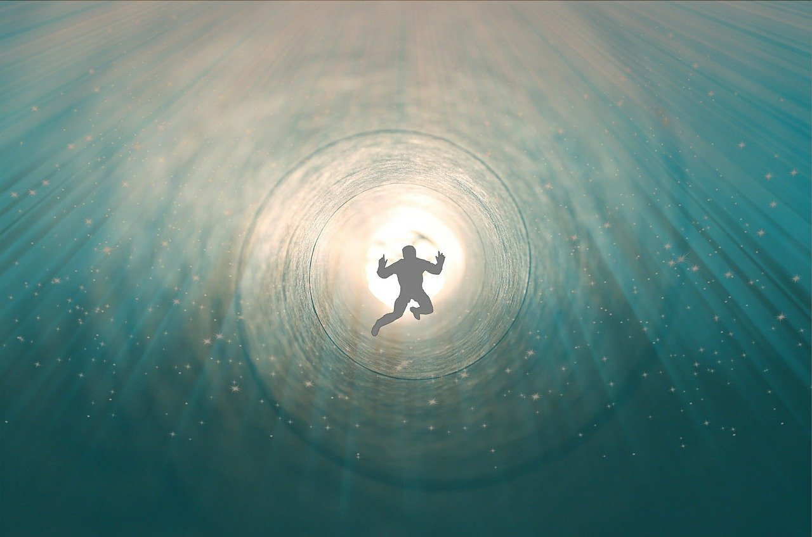

其實，人是不會「死」的
濟群法師
作為伴隨人類一生的兩大屬性，生和死，既相互否定，又密不可分。
如果將一個人的出生作為人生旅途的起點，那麼從他來到這個世界開始，每時每刻都在接近旅途的終點，在奔向他的末日。正是由於我們的生，帶來了無法回避的死亡。正如一位哲人所說的那樣：每個生命的經驗均以死為方向，這乃是生命經驗之本質。
那麼，生從何來，死往何去？依唯物論者的觀點：生從父母來。身體發膚受之父母，媽媽生下我，我就有了。而生命結束就意味著一切的消失——人死如燈滅。死亡作為個體生命的終點，充分展現了人生的有限。
依一般宗教的普遍看法：人在肉體之外，還有獨立的靈魂。色身固然會在幾十年後敗壞，會受到時間限制，會退出歷史舞台，但超然於肉體之外的靈魂是不死的，並將在另一個世界得到延續。
西方宗教的教義正是建立在對永生的期待上：受到限制的塵世生命在上帝拯救下，分享上帝的生命而獲得不滅的新生。在他們虔誠的祈禱中，死亡作為通向天堂的門戶，又意味著新生的開始。
唯物主義者認為，生命是物質的產物，形散則神滅，屬於斷滅論、一世論。但我們應當認識到，科學只能研究和改造外部世界，對於人類自身的認識，卻顯得力不從心。相對於唯物主義者的結論，宗教家提倡的兩世論，認為生命中有獨立不變的靈魂，又落入了常見，同樣是不究竟的。
佛陀依緣起的智慧考察生命現象，提出三世論，認為生命是相似相續、不常不斷的。生命不僅包括現在，還有著生生不已的過去和未來。生命就像流水，從無窮的過去一直延續到無盡的未來；生命又像鐵鍊，一環套著一環。我們這一期的人生，僅僅是其中的一片浪花，一個環節。
從唯物論的角度看，人生的確很短暫。可是通過佛法智慧認識人生，我們會發現：人其實是不會「死」的。所謂死，只是一期生命的結束，是生命形式的改變，但同時也是下期生命的開始。作為學佛者，不僅要關心現實人生的幸福，同時要關心未來生命的走向。